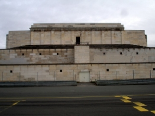

|  | On the Germany pages of this website you'll find the most well known places where Hitler lived, worked and gave speeches, as well as the lesser known places. Munchen was the city where it all started. Here Hitler gave fis first speeches and his 1923 attempt to overthrow the goverment. Nurnberg ismost famous for the NSDAP-Parteitage. And altthough a lot of historical buildings were ruined at the end of the war, Berlin still has a lot that reminds of the nazi period on Germany. The Obersalzberg Berchtegaden region is known best because of the Berghof and the Kehlsteinhaus. Look at the Other Places in Germany to get to some lesser known facts about Hitler's whereabouts in different German states. |